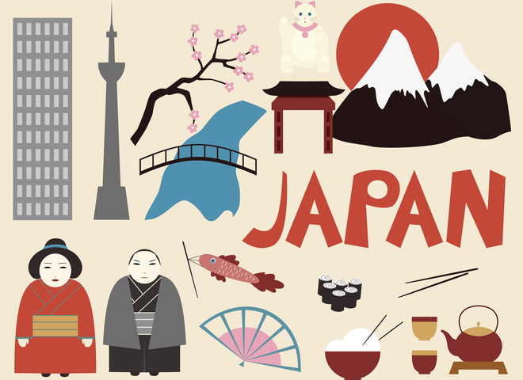
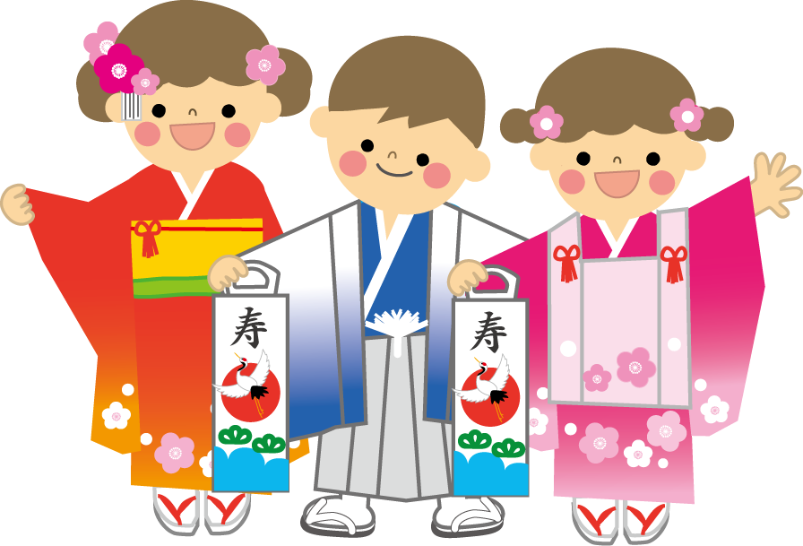
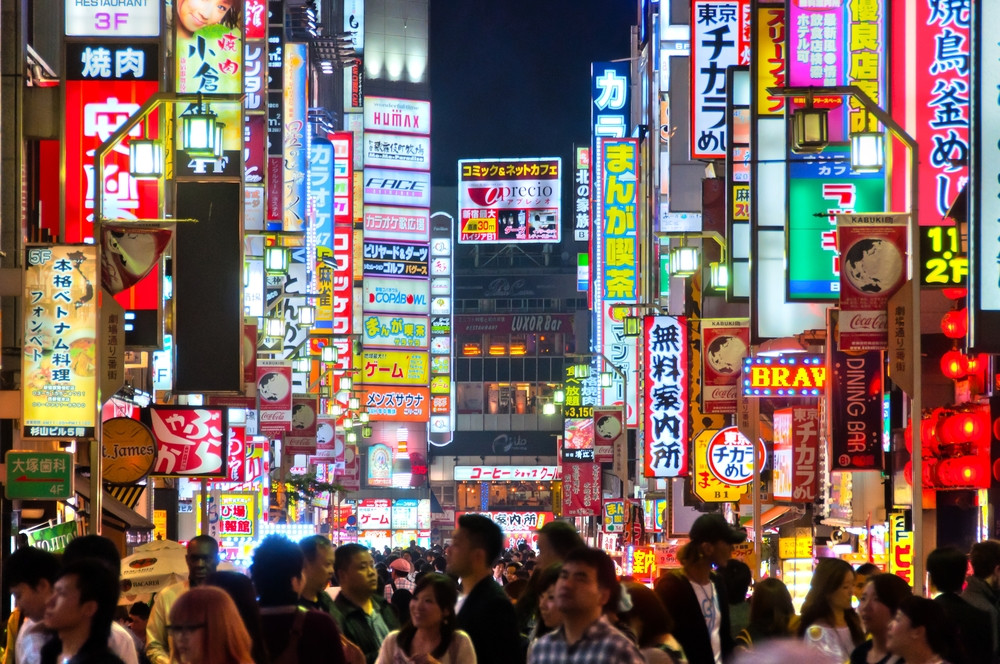
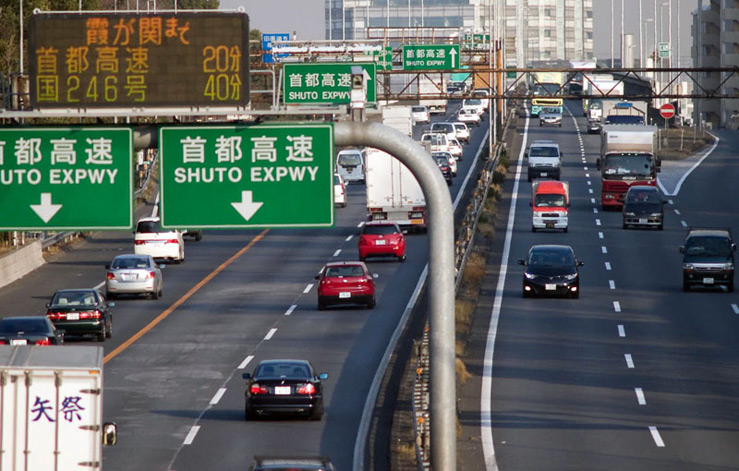
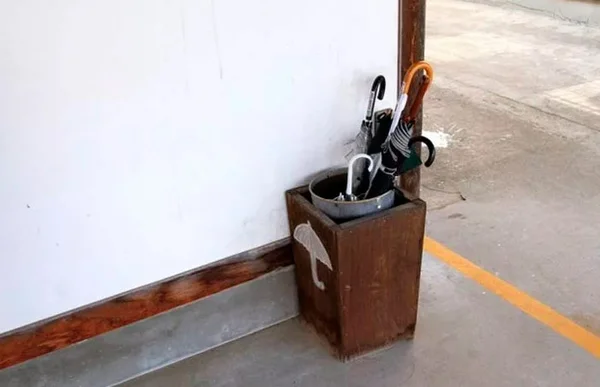

Источник истинного знания — в фактах.
А вы знали что?
Ограничение скорости на хайвеях 80км в час, но все едут 120, потому что до 120 обычно не ловят

В японских семьях абсолютно нормальная ситуация, когда брат с сестрой вообще не разговаривают, даже не знают номеров мобильных телефонов друг друга.
Если нет, тогда читайте:
- На вид японцы очень редко бывают мускулистыми, но при этом часто сильны физически, пропорция мышечная масса/физическая сила у них нарушен
- Японцы искренне считают, что их язык выучить почти нереально, поэтому очень уважают всех, кто может хотя бы поздороваться по-японски
- Токио – это город, который может похвастаться очень низким уровнем преступности (34 место в мире по данным 2012 года). В нем настолько безопасно, что дети могут не бояться гулять и пользоваться общественным транспортом одни. Большой Токио является самой большой городской агломерацией не только в Японии, но и во всем мире! Её население составляет почти 30 млн. человек!
- Право собственности в Японии почти священно. Представьте себе, в XVII в. сёгун подписал дарственную, согласно которой Фудзияма перешла во владение храма. И в 1974 году суд признал документ более чем двухсотлетней давности. Теперь эта гора — частная собственность. Под контролем государства остаются лишь тропинки, по которым каждое лето толпы туристов совершают восхождение, и действующая на вершине метеорологическая станция.
- Японцы народ очень чистоплотный, но, сколько бы ни было членов в семье, ванну все принимают, не меняя воду. Правда, перед этим каждый принимает душ.
- Япония – страна с левосторонним движением, а руль у автомобиля расположен справа.
- японцы - чрезвычайно вежливые люди. Если вам что-то потребуется, они бросят все свои дела и постараются помочь.
- Японцы очень честные люди - если вы забыли в метро зонтик, с вероятностью 99 процентов вам его вернут, если обратиться в бюро находок Раньше также возвращали кошельки с деньгами и вообще не воровали, теперь нет
- Японцы не умеют отдыхать, 4 дня отгула подряд считается отпуском. Брать полагающиеся по правилам 3 недели в год – неприемлемо
- В японском языке даже есть слово "кароши", что буквально переводится, как "смерть от переутруждения". В среднем каждый год с этим диагнозом умирает десять тысяч человек.
- В японском языке нет ругательств сильнее "дурак" и "идиот". Мощность эмоций выражается интонацией и громкостью (По-японски "дурак" звучит как "бака" (дословно глупый человек). А иностранец - как "гайдзин" (дословно - чужак). "Бака-гайдзин" в японском разговорном - это американец
- В Японии на улицах можно увидеть вазы с зонтиками. Если начинается дождь, можете взять любой, а потом, когда дождь заканчивается, ставите в ближайшую вазу.
- Фрукты и овощи в Японии стоят очень дорого. Например, за одно яблоко можно выложить 2$, а целая дыня может стоить и 200$. А вот мясо и рыба стоят копейки.
- В некоторых северных городах Японии на пешеходных дорожках не образуется гололеда, даже когда выпадают рекордные снегопады. Все дело в том, что улицы и тротура здесь специальным образом подогреваются. Как бы не было это странно, но при этом, проблема отопления каждого дома лежит на плечах хозяина — здесь попросту нет центрального отопления.